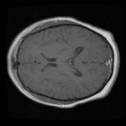
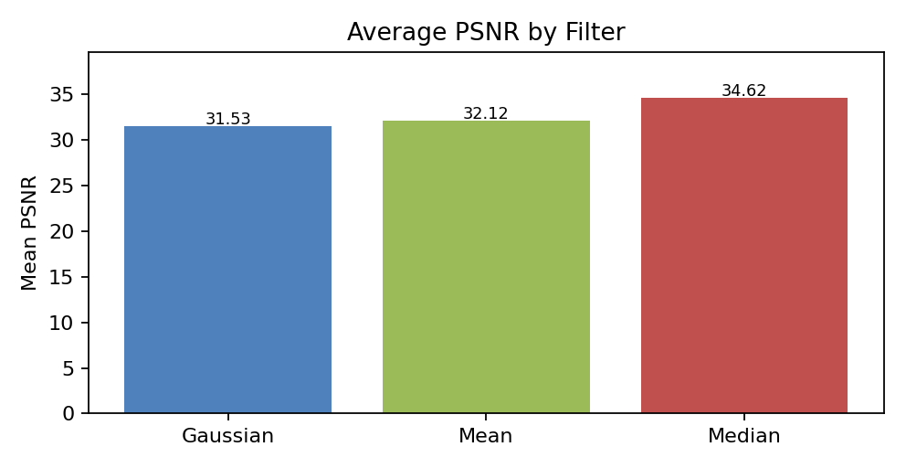
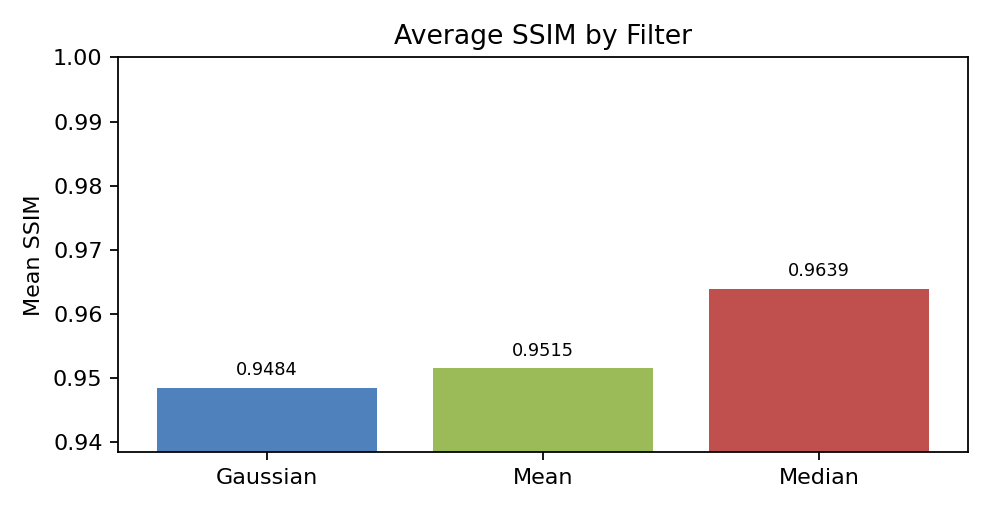

Computer Vision Semester Project: Assignment 1
Submitted By: 231192 - Muhammad Maaz Akram, 231200 - Muhammad Umar
Class: BSAI-6A Submitted to: Ms Hina Rashid
1. Two-Minute Overview for Viva
English: "In Assignment 1, we worked on brain MRI images from the BraTS-PEDs dataset. The purpose was not tumor detection yet. The purpose was pre-processing. We downloaded the MRI data, loaded NIfTI volumes, selected useful center slices, normalized the intensity values, applied three filters, Gaussian, mean, and median, and then compared the filtered outputs using PSNR and SSIM. We also saved before images, after images, comparison images, and a metrics CSV. In our results, the median filter performed best because it gave the highest average PSNR and SSIM, so it preserved image structure better while reducing noise."
Roman Urdu: "Assignment 1 mein hum ne brain MRI images par pre-processing ki. Is stage par tumor detect nahi karna tha. Hum ne data download kiya, NIfTI MRI volumes load kiye, center slices select kiye, intensity normalize ki, phir Gaussian, mean aur median filters apply kiye. Last mein PSNR aur SSIM se compare kiya ke kaunsa filter image structure ko zyada preserve karta hai. Hamare results mein median filter best raha."
"Assignment 1 is the base step. It cleans MRI slices before later segmentation and classification."
"Do not say Assignment 1 detects tumor. It only prepares and evaluates images."
2. Teacher-Given Objective
English: Clean raw medical image data by adjusting image intensity and reducing noise. Then quantify the restoration using PSNR and SSIM.
Roman Urdu: Raw MRI image ko clean karna tha, intensity ko proper range mein lana tha, noise kam karni thi, aur phir PSNR/SSIM se measure karna tha ke result kitna acha hai.
"The objective was radiometric pre-processing. It means we prepared image intensity values and reduced noise before using the images in later computer vision tasks."
3. Core Terms Before Code
| Term | English | Roman Urdu | Viva line |
|---|---|---|---|
| Intensity image | Image where each pixel value shows brightness or signal strength. | Har pixel ki value brightness ya MRI signal show karti hai. | "MRI is an intensity image, so pixel values matter." |
| 2D grayscale image | One image with height and width only. | Aik single black-white type image, sirf rows aur columns. | "A slice is like a 2D grayscale image." |
| RGB image | Height, width, and 3 color channels. | Image mein red, green, blue channels hotay hain. | "RGB 3D means color channels, not medical depth." |
| MRI volume | A stack of many 2D slices through the brain. | Brain ki bohat si slices aik stack mein hoti hain. | "MRI volume is 3D because it has height, width, and slice depth." |
| Slice | One 2D cut from a 3D volume. | 3D MRI volume ka aik 2D cut. | "We process volume slice by slice." |
| NIfTI | Common medical imaging file format, such as .nii or .nii.gz. | Medical MRI files ka format. | "NiBabel loads NIfTI files." |
| Segmentation mask | A label image that marks a region such as tumor. | Mask batata hai kaunsa area object ya tumor ka hai. | "Masks were excluded in Assignment 1 because we filter real MRI images, not labels." |
| Normalization | Scaling pixel values to a common range, here 0 to 1. | Pixel values ko 0 se 1 range mein lana. | "Normalization is not binary conversion." |
Normalization does not mean binary image. Binary image means only 0 and 1. Normalization means values are scaled between 0 and 1, like 0.12, 0.45, 0.91. Roman Urdu: normalization mein image black-white labels mein convert nahi hoti, values sirf common range mein aa jati hain.
4. PSNR and SSIM, Slowly
Full form: Peak Signal-to-Noise Ratio.
Higher or lower? Higher is better.
Why? Higher PSNR means the filtered image is closer to the original normalized image, so less distortion was introduced.
Roman Urdu: PSNR zyada ho to filtered image original ke zyada qareeb hai.
Full form: Structural Similarity Index.
Usual range: Mostly 0 to 1. It can become negative in rare cases if images are very structurally different.
Higher or lower? Higher is better. 1 means very similar structure.
Roman Urdu: SSIM zyada ho to image ki structure zyada preserve hui.
How PSNR compares images
First the code checks pixel difference between original and filtered image. If difference is small, error is small. Small error gives high PSNR. If filter changes the image too much, error is high and PSNR becomes lower.
MSE = average((Original - Filtered)^2)
PSNR = 10 * log10(MAX_PIXEL_VALUE^2 / MSE)How SSIM compares images
SSIM does not only check pixel difference. It checks brightness, contrast, and structure. Structure means the visible pattern of tissues, edges, shapes, and boundaries inside the MRI slice.
"PSNR checks numeric pixel error, while SSIM checks whether the visual structure is preserved. In both metrics, higher value is better for this assignment."
5. Filter Math Lab: Gaussian, Mean, Median
Click each filter. The small 3 by 3 grid shows the local window around one pixel. The animation keeps moving to show that the same operation slides over the whole image.
Mean filter
Math idea: Add all values in the local window and divide by total values.
New center pixel = (12+15+18+14+90+16+13+15+17) / 9 = 23.33Meaning: It smooths noise, but one very high value like 90 can affect the average.
Roman Urdu: Mean filter nearby pixels ka average leta hai. Agar aik value bohat zyada ho to average disturb ho sakta hai.
Median filter
Math idea: Sort all values and choose the middle value.
Sorted: 12, 13, 14, 15, 15, 16, 17, 18, 90
New center pixel = 15Meaning: It ignores extreme values better, so it often preserves edges and removes spike noise.
Roman Urdu: Median filter middle value leta hai, is liye extreme noise ka effect kam hota hai.
Gaussian filter
Math idea: Weighted average. Center and nearby pixels get more importance than far pixels.
Kernel example:
1 2 1
2 4 2
1 2 1
New center pixel = weighted sum / 16Meaning: It smooths naturally, but it can blur edges if smoothing is strong.
Roman Urdu: Gaussian filter weighted average leta hai. Center ke qareeb pixels ko zyada weight milta hai.
Limitation: Edge blur ho sakta hai.
Limitation: Outliers se affect hota hai.
Limitation: Fine texture remove kar sakta hai.
6. Dataset and How Much Work Was Done
BraTS-PEDs from The Cancer Imaging Archive.
Full collection: about 457 subjects and around 32.7 GB.
KaggleHub chunk: awansaad6797/cancer-dataset.
Reason: full dataset bohat large tha, is liye manageable chunk use kiya.
| Item | Your actual result | Viva meaning |
|---|---|---|
Metric rows in metrics.csv | 4,800 | One CSV row means one metric record: subject name + slice number + filter name + PSNR + SSIM. |
| Filters | 3 filters | Gaussian, mean, median. |
| Slice-filter metric records | 4,800 | Because every processed slice is measured once for Gaussian, once for mean, and once for median. |
| Processed slice instances | 1,600 | 4,800 metric rows divided by 3 filters. This is the number of slice instances evaluated, not the number of saved PNG files. |
| Unique subject/file names in metrics | 13 | The CSV column is subject. It stores MRI file names or subject-style names used during processing. |
| Saved comparison PNG files | 56 | These are visual examples saved in comparisons/. They are fewer because the code saves only selected slices with SAVE_EVERY_N = 5. |
English: A metric row is not an image. It is one line in metrics.csv that stores PSNR and SSIM for one filtered output.
Roman Urdu: Metric row image nahi hoti. Yeh CSV ki aik line hoti hai jahan aik slice par aik filter ka PSNR aur SSIM save hota hai.
Formula: 4,800 metric rows / 3 filters = 1,600 processed slice instances.
Roman Urdu: Har slice par 3 filters lagay. Is liye 1 slice ke 3 rows banay. Total rows ko 3 se divide kar ke processed slices ka count milta hai.
English: The notebook calculates metrics for all processed slice instances, but it saves visual PNG examples only for selected slices. That keeps the output folder small.
Roman Urdu: Metrics zyada slices ke liye calculate hotay hain, lekin images sirf selected slices ki save hoti hain. Is se folder bohat heavy nahi hota.
Safe answer: "The code limit was up to 100 MRI volumes and 20 center slices per volume. The metrics CSV has 4,800 rows. Since each processed slice is tested with 3 filters, that means 1,600 processed slice instances were evaluated. The saved comparison PNGs are only 56 because the notebook saves selected visual examples, not every metric record."
7. What Is an MRI Volume?
Shape is usually height x width. Example: one PNG slice.
Roman Urdu: Aik single flat image.
Shape is usually height x width x 3. The 3 means color channels, red, green, blue.
Roman Urdu: Ye color channels hain, medical depth nahi.
Shape is usually height x width x slices. The third dimension is physical depth through the brain.
Roman Urdu: Ye brain ki slices ka stack hota hai.
Some files may have height x width x slices x channel/time. Code takes first channel using vol[..., 0].
"RGB image has three color channels, but an MRI volume has many grayscale slices stacked through depth. We process the MRI volume slice by slice."
8. Code Block: Configuration and Folder Hierarchy
MAX_VOLUMES = 100
MAX_SLICES = 20
GAUSSIAN_SIGMA = 1.0
MEAN_SIZE = 3
MEDIAN_SIZE = 3
SAVE_EVERY_N = 5
OUT_DIR = Path("output")MAX_VOLUMES means maximum MRI volume files to process.
MAX_SLICES means maximum center slices selected from each volume.
SAVE_EVERY_N means save visual images only for selected slices.
100 volumes x 20 slices = 2,000 possible slice cases before blank-slice skipping and file availability.
Your metrics show 1,600 processed slice instances. Each one has 3 metric records because 3 filters were tested.
Folder hierarchy
output/
before/
original slice images
after/
gaussian/
mean/
median/
comparisons/
original + three filtered outputs in one image
metrics.csv
subject, slice, filter, psnr, ssim"The config block controls how much data we process, the filter parameters, and where outputs are stored. The folder structure separates original images, filtered images, comparison images, and numeric metrics."
9. Code Block: Dataset Loading and SEG Files
path = kagglehub.dataset_download("awansaad6797/cancer-dataset")
all_nii = sorted(f for f in Path(path).rglob("*.nii.gz") if f.is_file())
if len(all_nii) == 0:
all_nii = sorted(f for f in Path(path).rglob("*.nii") if f.is_file())
all_nii = [f for f in all_nii if "seg" not in f.name.lower()]SEG means segmentation. These files are usually masks or labels that mark tumor regions.
Roman Urdu: SEG file original MRI nahi hoti. Ye label/mask hoti hai jo region mark karti hai.
Assignment 1 filters real MRI intensity images. If we filter masks, PSNR/SSIM result is not meaningful for image denoising.
"Segmentation masks were present in the dataset, but I excluded them because Assignment 1 is about filtering MRI intensity images, not processing label masks."
10. Code Block: Normalization and Filtering
def normalise(slc):
mn, mx = slc.min(), slc.max()
if mx > mn:
return ((slc - mn) / (mx - mn + 1e-8)).astype(np.float32)
return np.zeros_like(slc, dtype=np.float32)
def apply_filters(slc):
return {
"gaussian": gaussian_filter(slc, sigma=GAUSSIAN_SIGMA),
"mean": uniform_filter(slc, size=MEAN_SIZE),
"median": median_filter(slc, size=MEDIAN_SIZE),
}Make intensity values consistent, then produce three filtered versions of the same slice.
Input: One 2D MRI slice.
Output: Normalized slice plus Gaussian, mean, and median outputs.
Normalization is not binary conversion. Binary image has only 0 and 1. Normalized image can have values like 0.13, 0.48, 0.92.
"I normalized the MRI slice to make intensity values comparable, then applied Gaussian, mean, and median filters. After that, I used PSNR and SSIM to check which filter preserved the image better."
11. Code Block: Metrics and Saving
def compute_metrics(orig, filt):
p = psnr(orig, filt, data_range=1.0)
s = ssim(orig, filt, data_range=1.0)
return round(p, 4), round(float(s), 4)
def save_comparison(orig, filtered, mets, fpath):
# Original + Gaussian + Mean + Median
# PSNR and SSIM written above each filtered outputThere are 2 metrics per filter: PSNR and SSIM.
3 filters x 2 metrics = 6 metric values per slice.
The metrics go into metrics.csv. The visual comparison goes into comparisons/.
"For every slice, I calculated PSNR and SSIM for all three filters, so each slice has six evaluation values: PSNR and SSIM for Gaussian, mean, and median."
12. Code Block: Main Processing Loop
for nii_path in tqdm(all_nii, desc="Volumes"):
vol = load_volume(nii_path)
if vol.ndim == 4:
vol = vol[..., 0]
slice_indices = centre_slice_indices(vol.shape[2], MAX_SLICES)
for z in slice_indices:
slc = normalise(vol[:, :, z])
if slc.max() < 0.01:
continue
filtered = apply_filters(slc)
mets = {fn: compute_metrics(slc, filtered[fn])
for fn in FILTER_NAMES}Process every selected volume slice by slice.
4,800 rows in metrics.csv, and selected images in output folders.
If examiner asks: how many slices?
The code can try up to 100 volumes and 20 center slices per volume. That is 2,000 possible slice instances before skipping unavailable or blank slices. Your actual metrics contain 4,800 CSV rows. Since each processed slice has 3 filter rows, this means 1,600 processed slice instances were evaluated. The 56 comparison images are only saved visual examples.
"The loop loads each MRI volume, selects center slices, skips almost blank slices, normalizes the slice, applies three filters, saves metrics, and saves selected visual results."
13. Output Images: What Changed?

What am I looking at?
You are looking at the same MRI slice after different filters. The filtered outputs look slightly smoother than the original. The change is subtle because MRI denoising should not destroy anatomy.

How to explain in viva
"This comparison image shows original, Gaussian, mean, and median outputs. The text above each filtered image gives PSNR and SSIM. A good output should reduce noise but keep tissue boundaries visible."
Good output: smoother image, brain structure still visible.
Bad output: too blurry, edges lost, or important tissue details removed.
These filters are mild: Gaussian sigma is 1.0, mean window is 3 by 3, and median window is 3 by 3. Mild filters are used because medical details should not be destroyed.
14. Numeric Results and Ranking
| Rank | Filter | Mean PSNR | Mean SSIM | Why this rank? |
|---|---|---|---|---|
| 1 | Median | 34.6233 | 0.9639 | Highest PSNR and highest SSIM. Best in this run. |
| 2 | Mean | 32.1203 | 0.9515 | Better than Gaussian by average metrics here, but can blur details. |
| 3 | Gaussian | 31.5317 | 0.9484 | Smooth output, but average values were lower than mean and median. |


"According to our average PSNR and SSIM, median filter performed best. I will not say median is always best for all images, but for our dataset and settings it gave the best result."
15. Viva Questions and Safe Answers
It is MRI image pre-processing using normalization and filtering, followed by PSNR and SSIM evaluation.
To bring different intensity ranges into 0 to 1, so filters and metrics can work consistently.
No. Binary has only 0 and 1. Normalized image has decimal values between 0 and 1.
Structure means visible patterns, edges, tissue boundaries, and shapes inside the MRI image.
It got the highest average PSNR and SSIM, so it preserved the original structure better in our results.
PSNR and SSIM do not prove medical diagnosis. They only measure image similarity and structure preservation.
16. Common Examiner Follow-Up Questions
Safe answer: We use original as reference to measure how much the filter changed the image. It is not a perfect ground truth, but it helps compare filters fairly.
Safe answer: Strong filtering can remove important MRI details. Medical images need careful smoothing.
Safe answer: PSNR measures pixel error. SSIM measures visual structure. Both together give a better comparison.
Safe answer: Yes. If the window is too large, it can remove fine details. We used a small 3 by 3 window.
17. Final Explanation Practice
Use this only after you revise the steps. Click the button when you want the complete answer.
"Assignment 1 was about radiometric pre-processing and noise mitigation for brain MRI images. The original source was TCIA BraTS-PEDs, and the code used a smaller KaggleHub chunk. The notebook loaded NIfTI MRI volumes, selected center slices, normalized each slice from 0 to 1, and applied Gaussian, mean, and median filters. Then it calculated PSNR and SSIM for each filtered output. PSNR tells how close the filtered image is to the original in terms of pixel error, while SSIM tells how well visual structure is preserved. The output folders contain original images, filtered images, comparison images, and metrics.csv. In our results, median filter was best because it had the highest average PSNR and SSIM. The limitation is that this is only image pre-processing, not tumor detection or medical diagnosis."